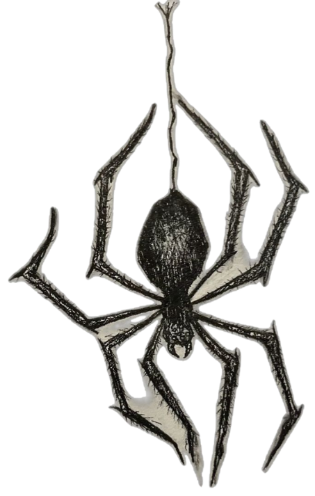
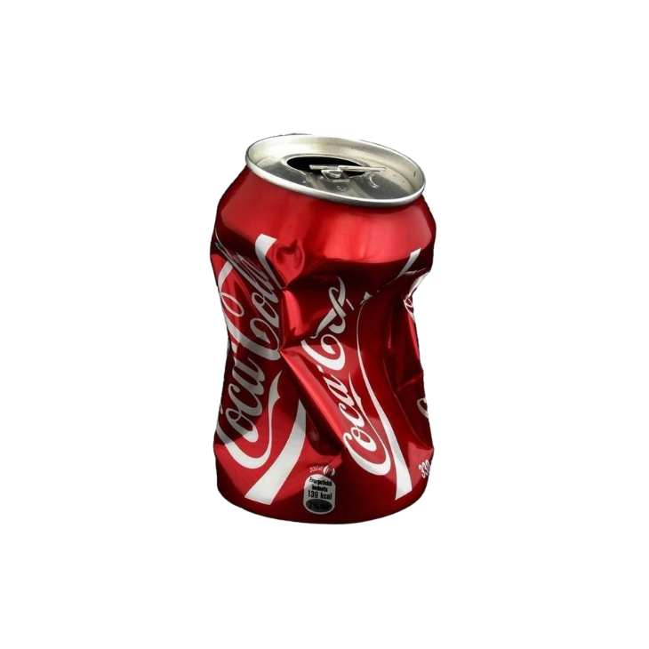
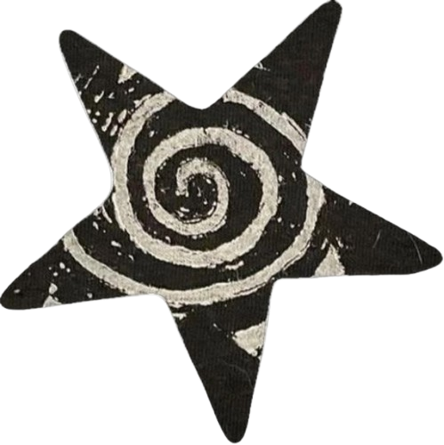

Anghel
brando bal
Distant father of Lebron James from Bicol!



Hello! My name is Jaime Khalil C. Bañares. I am a first-year BSCS student at Bicol University. I graduated from Legazpi City Science Highschool and I chose Computer Science because coding and programming always interested me and I also chose it for the possible income I could have in the future. Currently, Im interested in specializing in cybersecurity in the future. I am eager to learn anything that can help me through this journey.
Elementary
When I was in elementary my parents enrolled me in weekly robotics lessons and I was very intrigued. Ever since I was a kid I liked making things like lego or 3d puzzles or those toys that look like animals and move when wind goes through them similar to a windmill.
Highschool
When I got busy in school I didnt make enough time for extracuricculars like robotics; in my free time I would usually just play games. As I went through highschool I slowly lost what I felt for technology like that again.
Current
Choosing computer science for my course in college got my interest back in robotics, coding, and technology in general. I mainly chose this course for the possibility of getting a high salary in the future but as I continue to learn in this course I find myself grateful that I chose it because just like they say, "Find a job you enjoy doing, and you will never have to work a day in your life".
| Movies | Food | Video Games |
|---|---|---|
| My Girl | Pancit Canton | Valorant |
| 10 Things I Hate About You | Pizza (no meat except pepperoni) | Red Dead Redemption |
| La La Land | Pancit Canton Original | God of War |
| How to lose a guy in 10 days | Most types of spaghetti/pasta | Elden Ring |
| She's Dating the Gangster | Buldak Carbonara | Ghost of Tsushima |
| The Notebook | Pancit Canton Chilimansi | Borderlands Series |
| Project Hail Mary | Pancit Canton Kasalo Pack | NBA 2K |
| My Only Ü | Pancit Canton XTRA BIG | Roblox |
| Hows of Us | Sinigang | Deadlock |

In this revision I found adding new sections to be the easiest part of the project and also using my imagination to envision what I want my webpage to be and what the sections should be about. I experimented a lot with images in this version of the webpage I found it hard to find images that would fit the overall theme of my webpage. Most of the time I spent making it was searching for images that I could put around the webpage to give it color. I also had a hard time figuring out how to adjust the images to how I'd like it to be shown on the webpage. The parts that I would like to improve in my webpage are the general flexboxes, because in my opinion they do not look aesthetically pleasing. Unfortunately, I wasnt able to find an alternative to using flexboxes for the different sections without making it look worse.